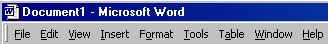
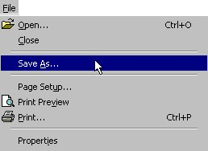
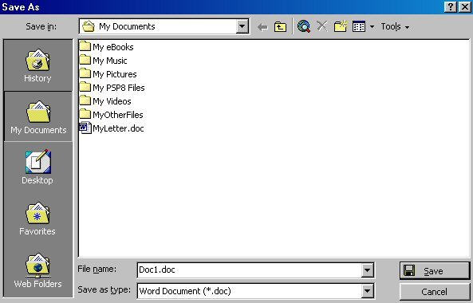
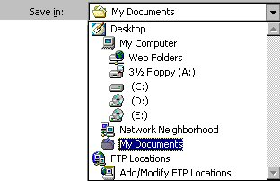
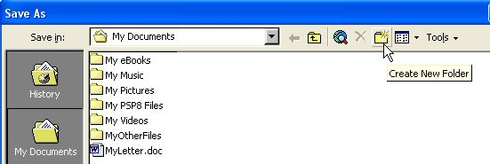
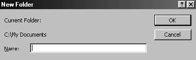

Free
computer Tutorials
|
Free
computer Tutorials
|
|
 home home |
|
|||||
Saving your work in Microsoft Word |
||||||
|
To save the work you have just done, you'll need to use the menu bar that runs right across the top. This is the menu bar:  Locate your menu bar, and click with your left mouse button on the word "File". This menu will drop down:  Move your mouse pointer to Save As and then click once with the left mouse button. You'll get the Save as dialogue box popping up. The Save As dialogue box will look like this:  There are three main areas to the Save As dialogue box: Where do you want to save your document? What do you want to call it? What type of document do you want to save it as? We'll take the three areas in turn, starting with "Where do you want to save your document?" The "Where" is set with the "Save in" Box right at the top. This one As you can see, the Save in box says My Documents. This is the folder called "My Documents" that is on your C drive. In other words, if you clicked the "Save" button now, you'll be saving your work in your "My Documents" folder. But you can save your work to anywhere you like on your computer. To see a list of places where you can save your work, click the little black down-pointing arrow just to the right of where it says "My Documents". You should get this  You can select any of those items on the list (though you might not have an E and F on yours). If you clicked on C, a list of folders on your C drive would appear in the big box below. Remember: you are being asked "Which folder do you want to save your work in?" Leave it on "My Documents". We can create a new folder in which to save our letter. To create a new folder, click on the New Folder icon, as shown in the image below:  You will get yet another dialogue popping up. It will look something like this:  Just go ahead and type in a name for your folder, in our case type in "MY WP Projects". Then click OK. Your are taken inside of your new folder. Your new folder has been created inside the My Documents folder. The My Documents folder is itself inside another folder - the root folder on the C drive (see the The Hard Drive Explained section for an explanation of root folders).
To continue with this lesson, click below. Click here to continue this lesson--> <--Back to the Word Contents Page |